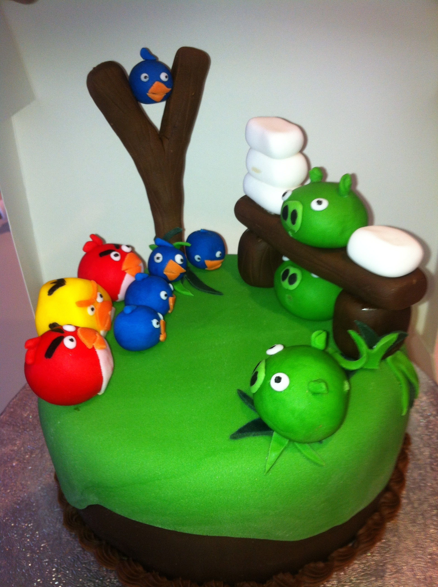

- Angry Birds Land
-
I volatili arrabbiati piú famosi del mondo hanno trovato un nido speciale. Si tratta dell'Angry Birds Land, in Finlandia, un parco divertimenti interamente dedicato al piú celebre dei videogiochi della Rovio Entertainment, la societá che lo ha creato nel 2009 e che ha raggiunto i 500 milioni di download nel 2011. Il parco é stato costruito all'interno di Sárkánniemi, un grosso adventure park in provincia di Tampere, a Nord di Helsinki. L'area a tema Angry Birds é stata presentata il 28 aprile, ma sará praticabile soltanto dall'8 giugno perché alcune giostre e alcuni percorsi di gioco sono ancora di fase di costruzione e allestimento.
- Angry Birds Cackes
-
I personaggi di Angry Birds hanno ispirato diversi pasticceri, piu' o meno professionali, nella realizzazione di diverse torte il cui tema fossero proprio gli uccelli e maiali protagonisti della serie. Le immagini successive mostrano un paio di esempi.

 Giacomo Cusinato & Rovio Mobile Production
Giacomo Cusinato & Rovio Mobile Production